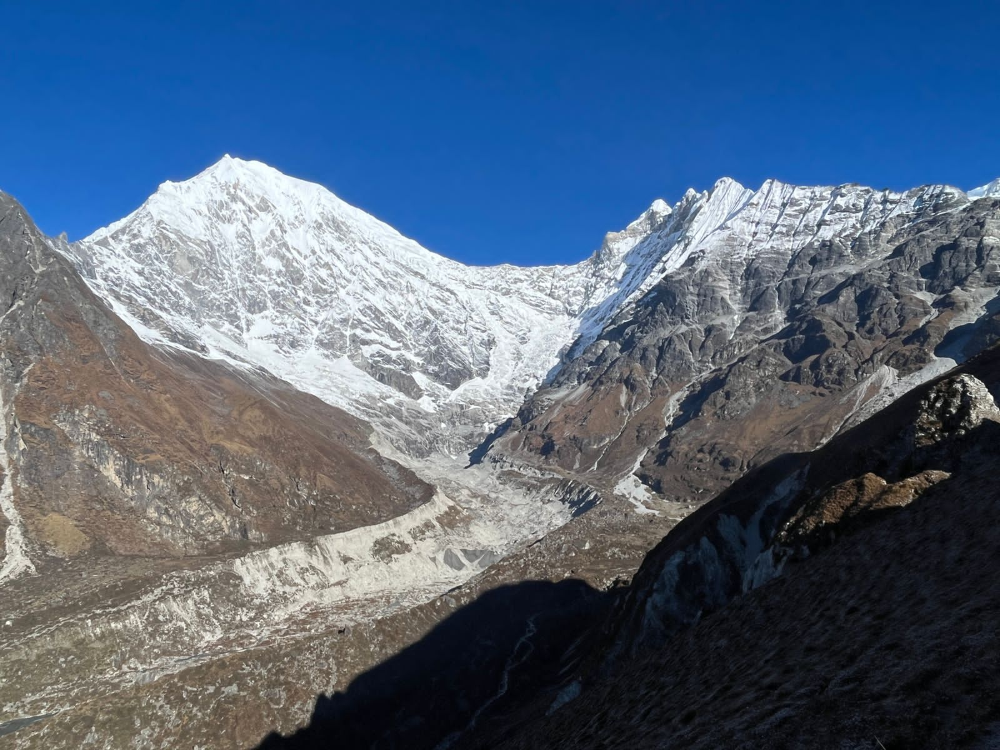
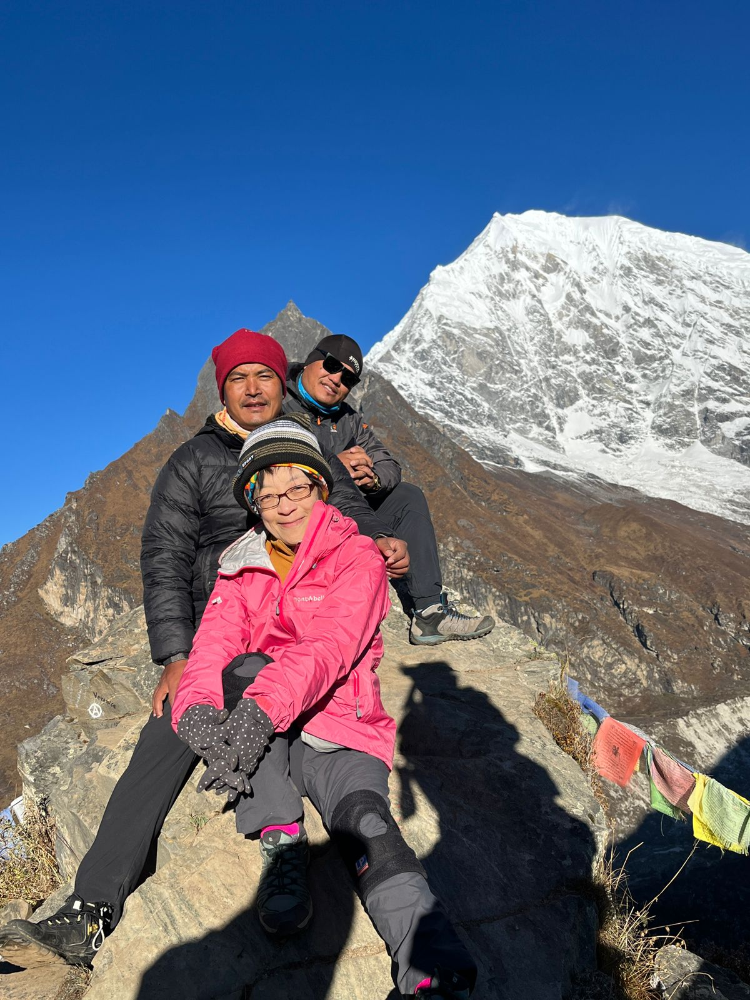
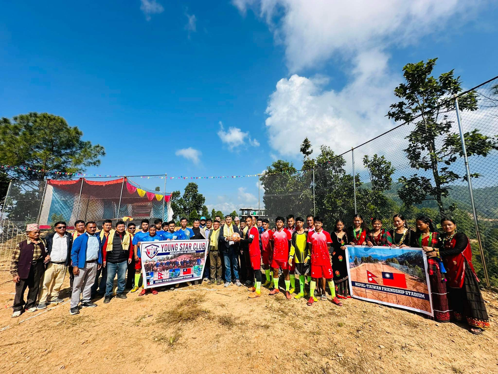
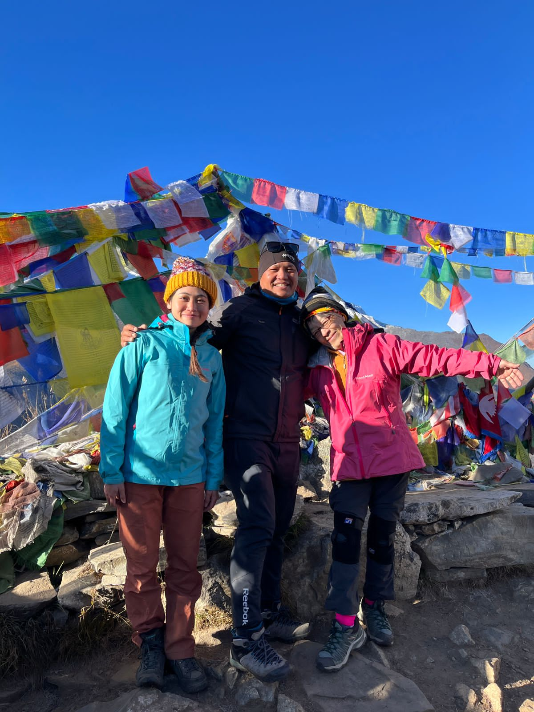
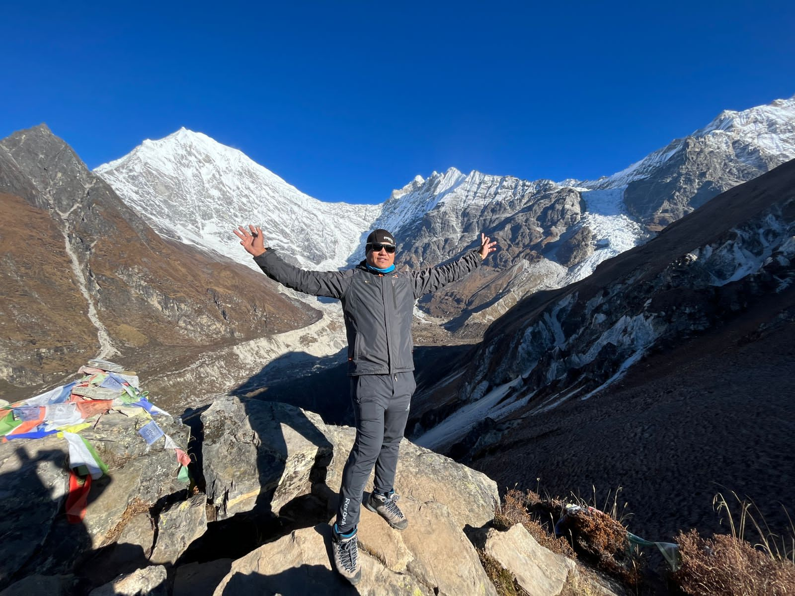
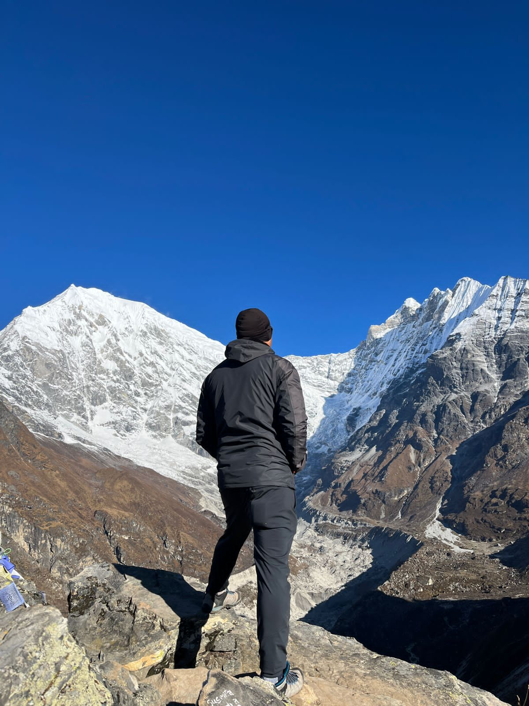
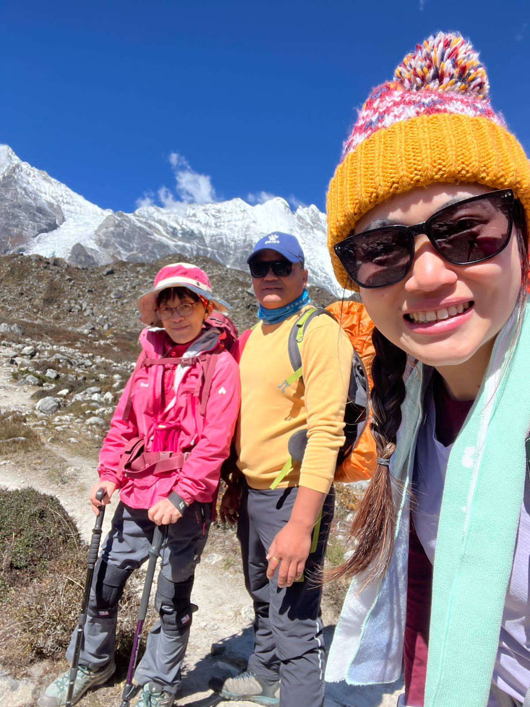

Our Langtang Valley trek with Namaste Hiking Trek went beyond every expectation we had. What first pulled us towards them was their strict safety protocol and personal care. From the scenic drive to Syabrubesi to reaching Kyanjin Gompa (3,870m) and summiting Kyanjin Ri for sunrise views over Langtang Lirung, our guide and the team made sure we were comfortable, safe, and well-acclimatized every single day!
Everest Region • Classic Himalayan Expedition
5.0
reviews on TripAdvisor
5.0
169 reviews on Google
Langtang Valley Trek
Explore the valley of glaciers close to Kathmandu, visiting Tamang heritage villages, Kyanjin Gompa cheese factory, and panoramic summits of Kyanjin Ri.

Travelers' Choice
Best of the Best 2026




Key Trip Facts
Duration
14 days
Difficulty
Moderate
Max Altitude
4,984 m
Destination
Nepal
Activity
Trekking
Accommodation
Hotels & Mountain Teahouses
Transport
Private 4WD / Tourist Bus
Meals
B.D.L.
Season
Autumn (Sep–Nov) & Spring (Mar–May)
Trek Starts
Syabrubesi (1,460 m)
Trek End At
Syabrubesi (1,460 m)
Trek Region
Langtang National Park
Package Start Point
Kathmandu
Package End Point
Kathmandu
Trek Overview
The 14-day Langtang Valley Trek is one of Nepal's most rewarding Himalayan journeys, combining high mountain scenery, rich Tamang culture, Tibetan-influenced Buddhist heritage, lush forests, alpine pastures, glaciers, and traditional stone settlements. Beginning from the road-accessible gateway of Syabrubesi, the trail follows the Langtang Khola north into the heart of Langtang National Park, opening into a broad high-altitude amphitheater at Kyanjin Gompa (3,800–3,870 m) beneath the towering summit of Langtang Lirung (7,245 m).
Located approximately 130 kilometres north of Kathmandu near the Tibet border, Langtang offers remarkable accessibility without requiring domestic mountain flights. The route progresses smoothly through multiple ecological zones—from subtropical river valleys and blooming rhododendron woodlands to rugged glacial terrain. With dedicated acclimatization at Kyanjin Gompa and optional viewpoint ascents of Kyanjin Ri (4,773 m) and Tserko Ri (4,984 m), this package offers a complete, safe, and deeply immersive mountain experience.
Want to know more about this trek?
Chat with us — real trekking experts, not bots.
Replies within 6–7 hours
Langtang Valley Trek Highlights
These aren’t promises pulled from a brochure — they’re the defining moments our trekkers keep mentioning in reviews, when returning to Kathmandu, and in messages months later.
Syabrubesi Road Gateway (1,420 m). The traditional overland trailhead connected to Kathmandu by scenic highway, eliminating domestic flight delays, airport congestion, and strict baggage limits.
Enchanted Lower Forest Trails. Atmospheric stone staircases and suspension bridges crossing the rushing Langtang Khola, shaded beneath tall oaks, blue pines, firs, and moss-draped canopies.
Lama Hotel Forest Haven (2,581 m). A pivotal overnight settlement in mountain woodland that marks the transition from the warmer lower gorge to the cooler mid-altitude valley.
Ghora Tabela Milestone (3,000 m). Where the dense woodland opens dramatically into a broad glacial U-shaped valley, offering the first uninterrupted vistas of snow-capped Himalayan peaks.
Langtang Village & Mundu (3,307–3,550 m). Rebuilt Tamang communities demonstrating immense resilience, featuring stone-masonry lodges, spinning prayer wheels, and Tibetan-influenced architecture.
Kyanjin Gompa Upper Settlement (3,800–3,870 m). The spiritual heart and highest principal settlement of the trek, set in a vast alpine amphitheater flanked by giant moraines and sacred shrines.
Langtang Lirung Sovereign Wall (7,245 m). Dominating the entire upper valley, this colossal peak rises over 3,400 meters above your teahouse, showcasing hanging glaciers and thunderous icefalls.
Dorje Lakpa (6,989 m) & Jugal Himal. An interconnected wall of ice pyramids and jagged ridges forming the eastern head of the valley toward the Tibetan frontier.
Panoramic Summit of Kyanjin Ri (4,773 m). An exhilarating morning ridge climb directly from Kyanjin Gompa rewarding trekkers with 360-degree views across glaciers, moraines, and 20+ peaks.
Tserko Ri High Expedition (4,984 m). A demanding full-day viewpoint for well-acclimatized trekkers, delivering an eagle-eye perspective into the remote Langshisa glacier basin.
Langtang National Park Sanctuary. Nepal's first Himalayan national park established in 1976 (1,710 sq km), protecting unique ecosystems from subtropical riverbanks to high alpine meadows.
Rhododendron Canopies in Bloom. From March to May, wild rhododendrons burst into vibrant shades of crimson, pink, and white along the trail, contrasted against snow-covered peaks.
Glaciers & Alpine Icefalls. Close encounters with the lateral moraines, debris-covered glaciers, and glacial meltstreams carving the upper valley floor beyond Kyanjin Gompa.
Authentic Tamang Cultural Immersion. Moving through living communities where local language, handwoven clothing, stone chortens, and everyday traditions remain deeply rooted.
Protected Wildlife Habitat. Trekking through prime habitat for rare red pandas, Himalayan tahr, musk deer, gray langurs, and iridescent danphe pheasants.
Artisanal Yak Cheese & Teahouse Dining. Visiting the high-altitude Swiss-assisted cheese factory at Kyanjin Gompa and sharing evenings beside warm lodge hearths over fresh dal bhat.
Why Book the Langtang Valley Trek with Namaste Hiking Trek?
Most agencies can arrange transport to Syabrubesi. The real difference lies in what happens across the full journey—certified altitude leadership, local lodge relationships, and responsive safety protocols. These are the qualities our guests from around the world highlight in their TripAdvisor reviews. Ranked among the top agencies in Nepal, our reputation is built on dedicated care on every single departure.
Langtang Specialist Guides with Years of Experience
Our guides are licensed wilderness leaders who know the Langtang trail intimately. They understand local microclimates, lodge hosts, trail conditions, and know exactly how to manage your pace so you arrive at Kyanjin Gompa feeling strong and well-acclimatized.
100% Guaranteed Departures
Every scheduled date runs without cancellation. Whether you join as a solo trekker or with friends, your trip is locked in without minimum participant thresholds.
Connect with Your Group Before Departure
Through our secure client portal, you can see who is joining your trek—nationalities, names, and group details—allowing you to connect on WhatsApp before arriving in Kathmandu.
Detailed Office Pre-Trek Briefing
We sit down together in Kathmandu to inspect your equipment, verify medical preparation, review the elevation profile, and address every practical question before heading to the trailhead.
Real People Available 24/7 on WhatsApp
Lal, Kamal, and Hemlal personally respond to inquiries and coordinate trip operations. During Nepal hours we reply within minutes, keeping you fully supported before, during, and after your trek.
Private Airport Transfers Included
A private driver greets you at Tribhuvan International Airport with a personalized Namaste Hiking Trek name board and transfers you directly to your hotel in Thamel.
Tested Down Jackets & Sleeping Bags
Rent high-grade four-season down jackets and -20°C sleeping bags directly from our Kathmandu equipment store at nominal rates, eliminating the need to buy bulky winter gear at home.
Complimentary Heavy-Duty Duffle Bag
We provide a rugged, weather-resistant Namaste Hiking Trek duffle bag for your porter luggage, pre-sized to protect your belongings and comply with mountain weight limits.
Streamlined Online Booking Portal
Secure online card payments, easy passport and insurance uploads, and direct itinerary tracking without endless back-and-forth emails.
Daily Health Monitoring & Rapid Rescue
Every guide carries a pulse oximeter for daily oxygen and pulse checks at breakfast and dinner. In the event of acute altitude illness or injury, our Kathmandu headquarters coordinates immediate helicopter extraction.
Langtang Valley Trek Itinerary: Day by Day Details
Our comprehensive 14-day itinerary is paced to maximize safety, acclimatization, and cultural discovery. Explore the daily hiking hours, elevation profiles, meals, and overnight stops along the Langtang Khola valley below.
Day 1: Arrival in Kathmandu & Transfer to Hotel
Kathmandu – 1,400 m / 4,593 ft
Transfer time: 20 to 30 minutes
Accommodation: 3★ Hotel in Kathmandu (Thamel)
Activity: Airport greeting, transfer & trek preparation
Your Langtang Valley Trek begins with your arrival in Kathmandu, the capital of Nepal and the starting point for the journey into the Langtang mountains.
After arriving at the airport, you are transferred to your hotel and given time to settle in. Depending on your arrival time, the remainder of the day can be used for rest or a short walk around the nearby area.
The first priority is preparation for the trek. Your trekking equipment can be checked, luggage can be organized, and essential items such as your passport, personal medication, trekking documents, money, electronics and other valuables can be kept ready for the journey ahead. Because the Langtang Valley Trek is reached by road, the classic itinerary does not require a domestic flight, avoiding airport transit uncertainty.
The evening is kept relaxed so you can recover from international travel and prepare for the road journey and trekking days ahead.

Day 2: Kathmandu Sightseeing and Final Trek Preparation
Kathmandu – 1,400 m / 4,593 ft
Time: Flexible sightseeing & prep day
Accommodation: 3★ Hotel in Kathmandu
Activity: UNESCO heritage sightseeing, gear check & briefing
The second day provides additional time in Kathmandu before heading toward the Langtang region. This day can be used for sightseeing, personal activities or final trekking preparation, depending on your arrival schedule and travel preferences.
Travelers who want to experience Kathmandu can use the day to explore its cultural and historic UNESCO World Heritage areas. Those who have already visited the city can keep the day relaxed and focus on preparing for the trek.
Your trekking clothing, footwear, backpack, sleeping equipment, personal medication and other essential items should be checked before departure. It is also useful to charge phones, cameras and power banks because connectivity and charging opportunities become less convenient as the trek moves deeper into the mountains.
The main purpose of this day is to begin the trekking portion properly prepared rather than rushing directly from international travel into a long road journey.

Day 3: Drive from Kathmandu to Syabrubesi
Syabrubesi – 1,450 m / 4,757 ft – 6 to 8 hours drive
Drive time: Approximately 6 to 8 hours
Accommodation: Mountain Teahouse or Lodge in Syabrubesi
Transportation: Scenic overland drive via Trishuli & Dhunche
After breakfast, the journey begins with a scenic drive from Kathmandu toward Syabrubesi, the principal road gateway for the classic Langtang Valley Trek.
The road gradually leaves the Kathmandu Valley and enters Nepal's rugged hill country along the Pasang Lhamu Highway. The scenery changes from urban development to agricultural terraced fields, rivers, villages, forested slopes and increasingly mountainous terrain.
The final part of the journey follows mountain roads through Dhunche toward Syabrubesi. Travel time can vary because of traffic, weather, road conditions and local checkpoints, so the published driving time should be treated as an approximate range.
After arriving in Syabrubesi, you check into the local teahouse and prepare for the first full trekking day. You can organize your daypack, separate any items that will be needed during the walk, and rest after the long road journey. Syabrubesi marks the point where the road-based part of the itinerary gives way to the walking section of the Langtang Valley Trek.
Day 4: Syabrubesi to Lama Hotel
Lama Hotel – 2,400 to 2,500 m / 8,202 ft – 5 to 6 hours
Trek time: Approximately 5 to 6 hours
Trek Distance: Approx. 11 km / 6.8 miles
Accommodation: Mountain Teahouse in Lama Hotel
Trail: Riverbank ascent, suspension bridges, Bamboo (1,975m)
The first full trekking day begins after breakfast in Syabrubesi. The trail enters the forested lower Langtang Valley and follows the Langtang Khola river through a combination of uphill paths, stone sections, suspension bridges and woodland.
The route gradually gains elevation as it moves through the lower valley and reaches Bamboo (approx. 1,975 m) before continuing toward Lama Hotel. This is a full trekking day, so the main objective is to establish a comfortable, sustainable rhythm.
The landscape is very different from the open alpine terrain that appears later in the trek. Dense forest surrounds much of the lower trail, and the roar of the river remains a constant companion. In spring, the forest blooms with fresh green shoots and rhododendrons; autumn brings crisp, stable walking conditions.
After several hours of climbing through the gorge, you reach Lama Hotel and settle into the teahouse for a warm meal, hydration, rest, and briefing for tomorrow's ascent.
Day 5: Lama Hotel to Langtang Village / Mundu
Langtang Village – 3,300 to 3,550 m / 11,250 ft – 5 to 6 hours
Trek time: Approximately 5 to 6 hours
Trek Distance: Approx. 10.5 km / 6.5 miles
Accommodation: Teahouse in Langtang Village or Mundu
Milestones: Ghora Tabela (3,000m), entering upper valley
After breakfast, the trail continues upward from Lama Hotel toward the higher Langtang Valley. The morning section remains within the woodland for part of the route, but the landscape gradually becomes more open as elevation increases.
Ghora Tabela (approx. 3,000 m) provides an important milestone where the valley suddenly widens, the dense forest thins into subalpine meadows, and the surrounding peaks become prominent. The effects of altitude become more noticeable as you climb above 3,000 metres.
Langtang Village is one of the most culturally significant settlements on the classic route. Rebuilt after the 2015 earthquake, it provides a moving testament to Tamang resilience, traditional stone architecture, and Buddhist culture with prayer wheels, chortens, and mani walls.
Depending on the accommodation arrangement, the overnight stop is in Langtang Village or nearby Mundu. The evening is kept relaxed to prepare for the ascent to Kyanjin Gompa.
Important Note: The actual Day 5 overnight affects the sleeping-altitude gain to Kyanjin. Confirm the lodge elevation and adapt the schedule to personal symptoms and acclimatization; the later Kyanjin rest/exploration day does not cancel risk from an earlier rapid ascent.
Day 6: Langtang Village to Kyanjin Gompa
Kyanjin Gompa – 3,800 to 3,870 m / 12,696 ft – 3 to 4 hours
Trek time: Approximately 3 to 4 hours
Trek Distance: Approx. 6.5 km / 4.0 miles
Accommodation: Mountain Teahouse in Kyanjin Gompa
Highlights: Broad glacial valley, Kyanjin Gompa monastery
The sixth day takes you into the upper Langtang Valley and to Kyanjin Gompa, the main destination of the classic trek. Compared with some of the previous trekking stages, the walking time is relatively short, but the increase in elevation makes the day particularly important.
The landscape transforms rapidly: the forest completely gives way to high alpine grasslands, lateral moraines, and snow-dusted ridgelines. En route, you cross wide yak pastures, passing extensive mani walls built with carved slate prayer stones.
The trail gradually enters Kyanjin Gompa (approx. 3,800–3,870 m), nestled directly below the dramatic south face of Langtang Lirung (7,245 m).
After arriving and checking into your lodge, the afternoon is spent resting and taking gentle strolls around the village and monastery rather than rushing uphill. This gives the body essential time to adjust to sleeping at nearly 3,900 meters.
Day 7: Kyanjin Gompa Acclimatization and Upper Valley Exploration
Kyanjin Gompa – 3,800 m / 12,467 ft – 3 to 6 hours
Activity time: 3 to 6 hours depending on choices
Accommodation: Mountain Teahouse in Kyanjin Gompa
Activities: Cheese factory, Langshisa valley walk, glacier view
Day seven is dedicated to acclimatization and exploration around Kyanjin Gompa. Rather than reaching the highest standard sleeping point and immediately descending, spending multiple nights at altitude creates a sustainable rhythm and provides time to genuinely absorb the upper valley.
The day's activity is tailored to your physical condition and the weather: you can take a gentle walk through the settlement, visit the historic Kyanjin Gompa monastery, sample fresh artisanal yak cheese at the famous local dairy, or hike along the glacial moraine toward Langshisa Kharka.
Because your main luggage remains securely at the teahouse, you carry only a light daypack with warm layers and water, making movement far more comfortable.
This extra day also provides a valuable weather window for the following day's viewpoint climb, ensuring you do not have to force a high summit attempt in poor visibility.
Important Note: Kyanjin Ri and Tserko Ri are distinct objectives. Specify the actual viewpoint or summit and its elevation in the confirmed itinerary; do not promise that every group reaches a single generic 5,000-m endpoint. Weather, snow, health, available daylight and guide assessment determine the turnaround.
Day 8: Kyanjin Ri or Tserko Ri High Viewpoint Day Hike
Viewpoint Summit – 4,700 to 5,000 m / 16,350 ft – 5 to 8 hours
Hike time: 5 to 8 hours depending on objective
Max Altitude: 4,773 m (Kyanjin Ri) or 4,984 m (Tserko Ri)
Accommodation: Mountain Teahouse in Kyanjin Gompa
Summit: 360° Panorama of Langtang Lirung, Dorje Lakpa & Tibet
The eighth day is the main high-altitude exploration highlight of the entire trek. After an early morning breakfast, you begin the steep ascent toward one of the dramatic viewpoints towering above Kyanjin.
Kyanjin Ri (4,773 m) is the favored choice for most trekkers, requiring roughly 4 to 5 hours round trip for breathtaking panoramic views of Langtang Lirung, Kinshung, Yansa Tsenji, and the glacial valley floor. Tserko Ri (4,984 m) is a more strenuous 7 to 8-hour endeavor suited for experienced, well-conditioned hikers seeking a high Himalayan summit experience.
The ascent is taken slowly with rhythmic breathing ('Bistari, Bistari'). As you gain elevation, the surrounding mountains transform into an interconnected amphitheater of snow ridges and hanging seracs.
The high-altitude climb remains completely optional. If weather turns, or if anyone displays symptoms of altitude sickness, the turnaround is immediate. In the afternoon, you return to Kyanjin Gompa to celebrate and rest for your final night in the high valley.
Day 9: Kyanjin Gompa to Lama Hotel
Lama Hotel – 2,400 to 2,500 m / 8,202 ft – 6 to 7 hours
Trek time: Approximately 6 to 7 hours
Trek Distance: Approx. 17 km / 10.5 miles
Accommodation: Mountain Teahouse in Lama Hotel
Descent: Retracing upper valley, Ghora Tabela, into forest
The ninth day begins the descent from Kyanjin Gompa. After breakfast, you retrace your steps down the valley through Langtang Village, Ghora Tabela, and back to Lama Hotel.
Descending through the valley provides a completely fresh visual perspective. As you lose altitude, the air becomes noticeably richer in oxygen and breathing feels effortless compared to previous days. The expansive alpine scenery gradually gives way to rhododendron and pine canopies.
While descending requires less cardiovascular exertion, long downhill walking places sustained impact on the quadriceps, knees, and ankles. A disciplined, controlled pace and the use of trekking poles are highly recommended on the rocky trails and stone staircases.
After reaching Lama Hotel in the late afternoon, you settle into the lodge for hot tea, hearty food, and deep recovery.
Day 10: Lama Hotel to Syabrubesi
Syabrubesi – 1,450 to 1,550 m / 4,757 ft – 5 to 6 hours
Trek time: Approximately 5 to 6 hours
Trek Distance: Approx. 11 km / 6.8 miles
Accommodation: Mountain Teahouse or Lodge in Syabrubesi
Final Trail Day: Bamboo, suspension bridges, valley trailhead
The tenth day completes the walking portion of the Langtang Valley journey. Leaving Lama Hotel, the trail winds downhill through the deep river gorge, crossing Bamboo and traversing stone pathways alongside the Langtang Khola.
The environment becomes warmer and greener with each passing hour. You cross the final suspension bridges and walk the gentle approach back into Syabrubesi, officially completing the classic mountain trail.
In the evening, you gather with your guide and porter team for a celebratory dinner, expressing appreciation for their dedication and companionship throughout the trek.
Overnight in Syabrubesi before the overland return drive tomorrow.
Day 11: Syabrubesi to Kathmandu
Kathmandu – 1,400 m / 4,593 ft – 6 to 8+ hours drive
Drive time: Approximately 6 to 8+ hours
Accommodation: 3★ Hotel in Kathmandu (Thamel)
Overland Transfer: Returning from mountains to Kathmandu
After breakfast in Syabrubesi, you board your private vehicle or shared jeep to begin the return overland journey to Kathmandu.
The drive retraces the winding hill roads through Dhunche and Trishuli Bazaar, gradually leaving the mountain scenery behind as you re-enter the bustling Kathmandu Valley rim.
Upon arrival in Kathmandu, you are transferred directly to your hotel in Thamel. After several days of rustic mountain teahouses, enjoy a long hot shower, comfortable bedding, and a relaxed evening exploring local cafes and restaurants.
Overnight in Kathmandu.
Day 12: Kathmandu Rest and Recovery Day
Kathmandu – 1,400 m / 4,593 ft
Time: Dedicated rest & buffer day
Accommodation: 3★ Hotel in Kathmandu
Activity: Muscle recovery, massage, photo sorting & buffer
Day twelve is intentionally designed as a full rest and contingency day. After completing multi-day mountain trekking and road travel, having an unhurried day gives your body the time it needs to recover.
You can spend the day resting at your hotel, booking an Ayurvedic herbal massage, organizing photos, and enjoying Kathmandu's vibrant food scene at your own pace.
Crucially, this day serves as a built-in buffer in case road conditions, weather, or altitude adjustments caused slight delays on the trail. Having this cushion ensures you never experience stress regarding your international travel schedule.
Day 13: Kathmandu Cultural and Flexible Day
Kathmandu – 1,400 m / 4,593 ft
Time: Full flexible cultural day
Accommodation: 3★ Hotel in Kathmandu
Activity: Thamel souvenir shopping, optional heritage exploration
The thirteenth day provides another relaxed, flexible day in Kathmandu. Travelers seeking additional cultural enrichment can visit iconic heritage landmarks such as Swayambhunath (Monkey Temple), Boudhanath Stupa, or the medieval courtyards of Patan Durbar Square.
This is also an ideal day for souvenir shopping in Thamel—browsing authentic pashminas, hand-painted thangkas, singing bowls, and Himalayan teas.
In the evening, we gather for a special farewell dinner hosted by Namaste Hiking Trek, celebrating your successful journey through the Langtang Valley and handing over your trek completion certificates.
Overnight in Kathmandu.
Day 14: Final Departure from Nepal
Kathmandu – 1,400 m / 4,593 ft
Transfer time: 20 to 30 minutes to TIA
Accommodation: None (End of package service)
Activity: Private airport drop-off for international flight
Your 14-day Langtang Valley Trek concludes today. After breakfast, pack your luggage and prepare for your departure transfer.
Our company representative and private vehicle will meet you at your hotel and transfer you to Tribhuvan International Airport approximately 3 hours before your scheduled flight.
As you board your homeward flight, you carry lifelong memories of the roaring Langtang Khola, the warm Tamang villages, the soaring crown of Langtang Lirung, and the peaceful serenity of Kyanjin Gompa. Namaste and safe travels!
14-Day Langtang Valley Trek Route at a Glance
| Day | Route / Activity | Approx. Time | Overnight |
|---|---|---|---|
| Day 1 | Arrival in Kathmandu & Transfer to Hotel | Flexible | Kathmandu (1,400 m) |
| Day 2 | Kathmandu Sightseeing and Final Trek Preparation | Flexible | Kathmandu (1,400 m) |
| Day 3 | Kathmandu to Syabrubesi by Scenic Overland Drive | 6 to 8 hrs drive | Syabrubesi (1,450 m) |
| Day 4 | Syabrubesi to Lama Hotel via Bamboo | 5 to 6 hrs | Lama Hotel (2,480 m) |
| Day 5 | Lama Hotel to Langtang Village / Mundu via Ghora Tabela | 5 to 6 hrs | Langtang Village / Mundu |
| Day 6 | Langtang Village / Mundu to Kyanjin Gompa | 3 to 4 hrs | Kyanjin Gompa (3,870 m) |
| Day 7 | Kyanjin Acclimatization & Upper Valley Exploration | 3 to 6 hrs | Kyanjin Gompa (3,870 m) |
| Day 8 | High Viewpoint Day: Kyanjin Ri (4,773m) or Tserko Ri (4,984m) | 5 to 8 hrs | Kyanjin Gompa (3,870 m) |
| Day 9 | Kyanjin Gompa to Lama Hotel (Descent) | 6 to 7 hrs | Lama Hotel (2,480 m) |
| Day 10 | Lama Hotel to Syabrubesi (Final Walking Day) | 5 to 6 hrs | Syabrubesi (1,450 m) |
| Day 11 | Syabrubesi to Kathmandu by Scenic Overland Drive | 6 to 8+ hrs drive | Kathmandu (1,400 m) |
| Day 12 | Kathmandu Rest, Recovery & Travel Contingency | Flexible | Kathmandu (1,400 m) |
| Day 13 | Kathmandu Cultural Sightseeing & Farewell Dinner | Flexible | Kathmandu (1,400 m) |
| Day 14 | Final International Airport Transfer & Departure | Flexible | End of Service |
The Core Langtang Trekking Route in Perspective
The central trekking corridor follows: Syabrubesi → Bamboo → Lama Hotel → Ghora Tabela → Langtang Village / Mundu → Kyanjin Gompa → Langtang Village → Lama Hotel → Syabrubesi.
Unlike routes that require crossing a high technical pass, the classic Langtang journey focuses on climbing deeply into an alpine valley beneath Langtang Lirung and returning through the same varied ecological corridor. Our 14-day schedule includes three full nights at Kyanjin Gompa, giving you the physical buffer, acclimatization, and safety to attempt Kyanjin Ri or Tserko Ri without rushing.
Not satisfied with this Itinerary?
Are you interested on planning custom trip? It only takes 2 minutes.
Includes
Private International Airport Transfers (x 2)
Personal airport pickup upon arrival and dedicated drop-off for your international flight by private vehicle.
Kathmandu to Syabrubesi Roundtrip Overland Transport
Comfortable scenic road transfers from Kathmandu to Syabrubesi and back by private vehicle or shared jeep, avoiding mountain flight delays.
First Aid Kit & Daily Pulse Oximeter Health Checks
Comprehensive mountain medical kit carried by your guide, including daily morning and evening oxygen saturation (SpO2) and pulse monitoring.
Government-Licensed Guide & Strong Mountain Porters
Experienced English-speaking wilderness guide plus local porters (1 porter per 2 trekkers, 20 kg limit) with fair wages, meals, lodging, and full insurance.
Langtang National Park Permit & TIMS Card
All necessary government park entry permits and Trekkers' Information Management System cards pre-arranged before departure without hassle.
4 Nights Hotel Accommodation in Kathmandu
Comfortable 3-star hotel in Thamel (twin-sharing) with breakfast included before and after the trek (Days 1, 2, 11, and 12/13).
8 Nights Mountain Teahouse Accommodation
Handpicked teahouse lodges along the trail on twin-sharing basis (Syabrubesi, Lama Hotel, Langtang Village, and Kyanjin Gompa).
Complimentary Duffle Bag & Gear Support
Heavy-duty branded Namaste Hiking Trek waterproof duffle bag for porter transport (returned after trek) plus map and completion certificate.
All Meals on Trek (Breakfast, Lunch, Dinner)
Three nourishing hot meals daily chosen directly from teahouse menus during the trek, including fresh seasonal fruit when available.
Excludes
Lunch and Dinner in Kathmandu
Meals in Kathmandu (except welcome and farewell dinners) are excluded to give you freedom to explore the city's diverse dining scene.
International Airfare & Nepal Entry Visa
Flights to/from your home country and the Nepal tourist visa fee (USD 30 for 15 days or USD 50 for 30 days, obtainable on arrival).
Travel & Medical Insurance with Evacuation
Comprehensive travel insurance covering high-altitude mountain trekking and emergency helicopter rescue up to 5,000 m is mandatory.
Personal Expenses, Beverages & Tips
Hot showers, battery charging, boiled/bottled drinking water, soft/alcoholic drinks, snacks, and customary tips for guide and porter.
Booking Dates & Availability for Langtang Valley Trek
05
AUG
Aug 5 – Aug 18, 2026
AVAILABLE$1,499 pp
09
AUG
Aug 9 – Aug 22, 2026
AVAILABLE$1,499 pp
13
AUG
Aug 13 – Aug 26, 2026
AVAILABLE$1,499 pp
17
AUG
Aug 17 – Aug 30, 2026
AVAILABLE$1,499 pp
21
AUG
Aug 21 – Sep 3, 2026
AVAILABLE$1,499 pp
Packing List for Langtang Valley Trek
Essential Info: Don’t have it? Rent it with us — USD 1/day per item
Printable PDF
Check off items as you pack them. Your packing state is saved automatically in your browser!
Hiking Gear (11 items)
Trekking Poles
Trail stabilizers, save those knees downhill! • 1 pair
Backpack
With porter 25–35L, going solo 40–60L • 1
Reusable Water Bottles
Hydrate — and hug at night when it’s filled with hot water! • 1
MicroSpikes
Grip it, handle icy paths like a boss • 1 pair
Trekking Boots
Boots for support, trail runners for pros • 1 pair
Headlamp
Keeps hands free — early hikes and midnight nature calls! • 1
Dry Bag / Zip-Lock Bags
Stay organized and stash the stinky • 1
Rain Cover for Backpack
Shields your bag from rain and rough rides! • 1
Sunglasses
Lose one, break one, still look cool • 2 pairs
Sun Hat / Cap
Shield your face — no one likes a sunburned selfie • 1
Packing Organizers
Tame your packing chaos like a pro-level trekker • 1
Garments (19 items)
Base Layer Set (Thermal)
A thermal hug for windy ridges • 2
Fleece / Microfiber Jacket
Like a wearable hug — light, warm, essential • 1
Quick-Dry Tees (Merino)
Sweat less, smell less, hike more • 3
Quick-Dry Pants
Dries fast — cross rivers, dodge rain • 1
Trekking Pant (Soft Shell)
Built for Nepal’s trails, tough and comfy • 1
Trekking Pant (Hard Shell)
Bring the big guns for snow and storm duty • 1
Windbreaker Jacket
Windproof your journey without packing bulk • 1
Waterproof Jacket
Because soggy trekkers aren’t happy trekkers • 1
Waterproof Pant
Wet pants? No thanks — bring these just in case • 1
Down Jacket
Your puffy cloud for chilly dawns and nights • 1
Cosy Outfit for Teahouses
Trade hiking boots for this once you’re in the teahouse • 1 set
Socks (Liner / Trekking)
Happy feet = happy trek. Bring extras! • 6 pairs
Gloves — Liner
Wear under gloves or for chilly tea stops • 1 pair
Gloves — Windproof
Block those winds sweeping down from the peaks • 1 pair
Woolen Hat
Block out wind and keep your brain warm • 1
Beanie
Extra warmth while sipping tea in the yard • 1
Neck Gaiter
Neck protector, face warmer, and style icon in one • 1
Under Garments
Laundry day is rare — pack backups! • 3
Bra
Supportive and breathable for long trail days • 3
Sleeping (5 items)
Sleeping Bag
Sleep snug — from stars to teahouse beds • 1
Sleeping Bag Liner
Add warmth and avoid funky smells • 1
Earplugs
Snorers in the next room? Problem solved • 2 sets
Travel Pillow
Nap like royalty, even in the Himalayas • 1
Eye Mask
Sun’s up? Not till you are • 1
Toiletries & Hygiene (16 items)
Microfiber Towel
Dries fast, packs light — towel off in style • 1
Toothbrush & Toothpaste
Morning breath? Not on these trails • 1 set
Wet Wipes
No shower? No problem — wipes to the rescue • 2 packs
First Aid Kit
Leeches, scrapes, bruises — be ready • 1
Sunscreen
High-altitude sun bites — lather up • 1
Blister Kit
Blisters sneak up — treat them quick • 1
Soap / Shampoo
Bucket shower? You’ll still feel fresh • 1 set
Lip Balm
Wind or sun, protect those lips • 1
Comb or Brush
Brush off the dust — hair’s still happy • 1
Period Supplies
Periods don’t pause for mountains • As needed
Nail Clippers / Tweezers
Snagged gear or sharp toenail? Clip it clean • 1
Toilet Paper
Don’t get caught short — carry your own roll • Varies
Sanitising Gel
Sanitize before snack time, at every stop • 1
Deodorant
Feel fresh, even 3 days from a shower • 1
Mirror (Optional)
For grooming or checking windburn • 1
Water Purification Tablets / Filters
Turn glacier melt into safe drinking water • 1
Electronics (9 items)
Camera
Snap yaks, peaks, and village smiles • 1
Phone
Call home, check maps, jam tunes — one device • 1
GPS Watch / Device
Track your climbs, brag later • 1
External Hard Drive
No backup, no proof — save it all • 1
Cables
Juice up your phone, cam, or headlamp • 1
Power Bank
Dead battery? This keeps you going • 1
E-Book Reader
Books in your pocket — read and relax • 1
Travel Adapter (Type D, C & M)
Stay charged across Nepal • 1
Earphones
Tunes or podcasts — your trail soundtrack • 1
Miscellaneous (10 items)
Lightweight Shoes / Sandals
Post-hike bliss — slip into comfort • 1 pair
Gaiters
Keep snow and grit out of your boots • 1 pair
Playing Cards / Card Games
Perfect for rest days or teahouse hangs • 1
Multitool
Solves (almost) everything in one flip • 1
Journal / Pen
Write. Reflect. Doodle. Dream. • 1 set
Repair Kit
Patch up gear before it falls apart • 1
Insulated Flask
Sip hot tea in icy wind like a local • 1
USD 15–20 in Nepalese Currency
Tea, snacks, or surprise tips — always handy • As needed
Snacks
Energy Bars, Protein, Trail Mix • Varies
Electrolyte Tablets or Powder
Beat cramps — fuel up with electrolytes • Varies
This packing list is a guide, not a rulebook. On the meeting day in Kathmandu we go through your gear together — anything missing you can rent from us for USD 1 a day per item, or we’ll point you to the right shop for your budget. Almost everything is available in Kathmandu, so first-time trekkers arrive light and leave prepared.
Read before you book: Langtang Valley Trek
To help you decide if the 14-day Langtang Valley Trek is the right adventure for you, we have prepared detailed guidelines on road transport, elevation, teahouses, permits, and seasonal trail conditions.
If you have any specific questions about your fitness, group size, or private upgrades, email or WhatsApp our lead team. We reply promptly to help you plan.
0/21 read
Nice start — keep going
Accommodation for the Langtang Valley Trek
On this 14-day itinerary, you stay 4 nights in a quality hotel in Kathmandu (Thamel) and 8 nights in local mountain teahouses along the trekking trail.
What to expect in Kathmandu
We accommodate our guests in a well-appointed 3-star hotel in Thamel on a twin-sharing basis (or private room upon request). Rooms feature private en-suite bathrooms, high-speed Wi-Fi, 24/7 hot water, comfortable bedding, and included daily breakfast.
What to expect in Langtang Teahouses
The Langtang Valley Trek is an established teahouse route. Lodges in Syabrubesi, Lama Hotel, Langtang Village, and Kyanjin Gompa provide twin-bed rooms with mattresses, pillows, and blankets. Rooms are clean but unheated; bringing a warm four-season sleeping bag (-15°C to -20°C rating) is strongly recommended for nights at Kyanjin Gompa (3,870 m).
Bathrooms are communal, with a mix of Western sitting toilets and squat toilets. Hot showers heated by gas geysers or solar are available at lower settlements and at Kyanjin Gompa for a small fee (approx. USD 3–5). Dining halls are heated in the evenings by central wood or briquette stoves.
Available Food in Langtang Valley Trek
Teahouse menus in Langtang offer wholesome, energizing meals prepared fresh to order. The staples include:
Dal Bhat Tarkari: The national trekking powerhouse consisting of steamed rice, spiced lentil soup, vegetable curry, and pickles. It is freshly cooked, easily digestible, and comes with free refills—earning the famous saying 'Dal Bhat Power, 24 Hour!'
Other Meals: Vegetable fried rice, chow mein noodles, potato rosti, momo dumplings, garlic soup (great for acclimatization), chapati, Tibetan bread, porridge, muesli, and eggs cooked to your preference.
Kyanjin Yak Cheese: At Kyanjin Gompa, you can sample and buy authentic yak cheese produced at the historic local dairy facility established with Swiss assistance in the 1950s.
We recommend a predominantly vegetarian diet on the trail for optimal digestive comfort and hygiene at higher elevations.
Best Time to Trek the Langtang Valley
The two prime trekking seasons in the Langtang region are Spring (March to May) and Autumn (September to November).
Spring (March - May): Temperatures are moderate, rhododendron forests explode in red and pink blooms across the middle valley, and days are pleasantly long with crystal clear mornings.
Autumn (September - November): Post-monsoon clarity brings the sharpest mountain visibility of the year, stable weather, and deep blue Himalayan skies. Daytime trekking temperatures are comfortable, though nights at Kyanjin Gompa drop below freezing.
Winter (December - February): Quiet trails and pristine snowy peaks, but severe cold at Kyanjin Gompa and snow may close higher viewpoints. Monsoon (June - August) brings frequent rain in the lower forest and potential highway landslides.
A Typical Day on the Langtang Valley Trek
Each trekking day follows an enjoyable, healthy mountain rhythm:
Morning: Wake up around 6:30–7:00 AM, pack your main duffle bag for the porters, and enjoy a hearty breakfast with hot ginger tea in the lodge dining room. Trekking starts around 7:45–8:00 AM while the mountain air is fresh and views are crisp.
Midday: Walk for 3 to 4 hours with water and photography breaks, stopping around noon at a scenic riverside lodge for a cooked lunch and 1 hour of rest.
Afternoon: Walk another 2 to 3 hours to reach your scheduled overnight village by 2:30–3:30 PM. Check into your room, change into dry warm clothes, and explore the village or relax.
Evening: Gather in the warm dining room around 6:30 PM for dinner. Your guide checks your oxygen levels with a pulse oximeter, reviews the day, and briefs you on tomorrow's trail before heading to bed around 9:00 PM.
Permits for Langtang Valley Trek
Two official permits are mandatory for the Langtang Valley Trek:
1. Langtang National Park Entry Permit: NPR 3,000 per person (approx. USD 25–30). Issued by the Department of National Parks and Wildlife Conservation.
2. TIMS Card (Trekkers' Information Management System): NPR 2,000 per person (approx. USD 16–20). Issued by the Nepal Tourism Board (NTB) / Trekking Agencies' Association of Nepal (TAAN).
Both permits are fully included in your Namaste Hiking Trek package. We arrange all permits in Kathmandu prior to departure—you simply provide your passport copy and 2 passport photos.
Acclimatization during the Langtang Valley Trek
Altitude safety is the cornerstone of our Langtang itinerary design. The route climbs gradually from Syabrubesi (1,420 m) to Lama Hotel (2,480 m), Langtang Village (3,430 m), and Kyanjin Gompa (3,870 m).
Our 14-day schedule incorporates three nights at Kyanjin Gompa. Having a dedicated acclimatization day on Day 7 allows your body to adjust to sleeping above 3,800 m before attempting the higher viewpoint hike to Kyanjin Ri (4,773 m) or Tserko Ri (4,984 m) on Day 8.
Our guides carry medical pulse oximeters to check your oxygen saturation (SpO2) twice daily. The golden rules apply: climb high, sleep low, maintain 3–4 liters of daily water intake, walk at a conversational pace, and inform your guide immediately if you experience headache, nausea, or dizziness.
Difficulty and Physical Fitness Required for Langtang Valley Trek
The classic Langtang Valley Trek is graded Moderate. It does not require technical mountaineering skills, ropes, crampons, or glacier crossings on the standard route.
However, it is a multi-day mountain trek involving 5 to 7 hours of daily walking across uneven stone steps, forest trails, suspension bridges, and sustained elevation gains and losses. The highest sleeping elevation is 3,870 m, and optional hikes reach up to 4,984 m.
Recommended Preparation: Start cardiovascular and leg endurance training 6 to 8 weeks prior to departure. Focus on stair climbing, uphill and downhill hill walking, squats, and brisk hiking carrying a 5–7 kg daypack. Good trekking poles are invaluable for protecting knees during the long descent.
Cultural Insights: Tamang Heritage and Buddhist Traditions
The Langtang Valley is the ancestral heartland of the Tamang and Tibetan-origin Bhotia communities. Their culture is deeply interwoven with Tibetan Buddhism:
Sacred Monuments: The trail is lined with intricately carved mani walls (stones etched with the mantra Om Mani Padme Hum), whitewashed chortens, and colorful prayer flags carrying prayers on the mountain winds. Always pass mani walls and stupas clockwise.
Kyanjin Gompa: Believed to be centuries old, this sacred monastery provides a serene sanctuary for meditation and religious ceremonies. Trekkers are welcome to enter quietly, observe butter lamps, and experience Buddhist puja rituals.
Hospitality: Staying in family-run teahouses gives you direct contact with locals, their craftsmanship, cuisine, and mountain folklore.
Route and Alternatives for the Langtang Valley Trek
The standard classic route is an out-and-back journey through the Langtang Khola valley: Syabrubesi → Lama Hotel → Langtang Village → Kyanjin Gompa and return.
While compressed 7 or 8-day itineraries exist, our 14-day package provides full arrival/departure buffer days in Kathmandu, scenic daylight road travel, and 3 nights at Kyanjin Gompa for safe acclimatization and viewpoint exploration.
For trekkers seeking longer circuits, Langtang connects seamlessly into the Tamang Heritage Trail (adding 4–5 days via Gatlang and Tatopani) or the Sacred Gosaikunda Lake and Laurebina Pass Trek crossing over to Helambu.
Overland Road Travel: Driving from Kathmandu to Syabrubesi
One of the primary benefits of the Langtang trek is that it requires no domestic flights, completely avoiding the weather cancellations common in Lukla or Jomsom.
The drive from Kathmandu to Syabrubesi covers approximately 120–130 kilometres and takes 6 to 8 hours depending on road conditions and local traffic. The route passes through Galchhi, Trishuli Bazaar, and the district capital of Dhunche before winding down to the river confluence at Syabrubesi (1,420 m).
The road is paved for the first half, with unpaved and bumpy mountain sections between Betrawati and Dhunche. We utilize rugged four-wheel-drive private jeeps or tourist vehicles to ensure a comfortable and safe overland journey.
Langtang Valley Trek for Families, Solo & Older Trekkers
Because Langtang combines moderate trail stages with road access, it is exceptionally adaptable across age groups:
Families: Excellent for active children and teenagers (ages 8+). Stages can be shortened if needed, and teahouses provide comfortable environments. The high viewpoint hikes on Day 8 can be kept gentle or optional.
Older Travelers: Highly recommended due to the progressive ascent rate and absence of mountain flights. We recommend trekking poles, porter support for all luggage, and a private jeep transfer for maximum road comfort.
Solo Travelers: Under government regulations, solo trekkers must have a licensed guide. Our private guide and porter arrangement ensures 100% safety, companionship, and personalized pacing.
Extend Your Trip: Gosaikunda Lakes or Tamang Heritage Trail
If you have extra time in Nepal, you can easily combine the Langtang Valley Trek with neighboring circuits:
Gosaikunda Lake Trek (+4–5 days): Divert at Thulo Syabru to climb to the holy alpine lakes of Gosaikunda (4,380 m), sacred to both Hindus and Buddhists.
Helambu Circuit (+3–4 days): Cross the Laurebina Pass (4,610 m) from Gosaikunda and trek through the lush Sherpa villages of Helambu, walking all the way back to the Kathmandu rim at Sundarijal.
Chitwan Jungle Safari (+3 days): Relax after your mountain trek with a sub-tropical wildlife safari in Chitwan National Park to see one-horned rhinos, Bengal tigers, and gharial crocodiles.
Porter Weight Limit and Trekking Luggage for Langtang Valley
We adhere strictly to ethical porter employment guidelines established by the International Porter Protection Group (IPPG):
One porter is assigned to two trekkers, carrying a maximum combined weight of 20 kg (10 kg / 22 lbs per trekker). We provide a complimentary heavy-duty waterproof duffle bag for your porter luggage.
You carry your own comfortable daypack (25–30 liters) containing daily essentials: water bottle, warm fleece, rain jacket, sunscreen, camera, lip balm, and personal medication. Excess city clothes and travel luggage can be stored for free in our secure Kathmandu office storage room.
Helicopter Options & Sightseeing in the Langtang Valley
For trekkers who want to bypass the return hike, we offer a Helicopter Return Upgrade from Kyanjin Gompa to Kathmandu.
The 30-minute chartered flight lifts off directly from Kyanjin Gompa helipad, soaring over Langtang Lirung, Gosaikunda lakes, and forested ridges before landing in Kathmandu. This upgrade reduces your trek by 3 days while providing unforgettable aerial views.
Charter costs range from USD 1,400 to USD 1,800 per private helicopter (seating up to 5 passengers), making it economical when split within a group.
Responsible Trekking & Conservation in Langtang National Park
Langtang National Park is a fragile Himalayan ecological reserve. We practice strict 'Leave No Trace' principles:
Plastic Waste Reduction: Avoid single-use disposable plastic water bottles. Carry reusable metal or Nalgene bottles and utilize water purification tablets, UV SteriPENs, or life straws.
Flora & Fauna Protection: Never pick wild flowers, collect medicinal alpine herbs, or disturb wildlife (especially musk deer, tahr, and red pandas). Stay on designated trails to prevent soil erosion.
Community Support: We employ local guides and porters from the Rasuwa and Langtang regions, patronize locally owned teahouses, and purchase local mountain products such as Kyanjin yak cheese.
Independent vs. Guided Trekking in the Langtang Valley
Under regulations enacted by the Nepal Tourism Board, independent solo trekking without a licensed guide is restricted in national park regions. Trekking with a certified agency such as Namaste Hiking Trek ensures:
Safety & Navigation: Your guide is trained in wilderness first aid, altitude sickness recognition, and route safety across changing weather.
Permits & Logistics: We handle all TIMS registration, park checkpoint inspections, vehicle transfers, and lodge reservations in advance during peak spring and autumn months.
Cultural Connection: Having a local guide bridges language barriers, introducing you to teahouse owners, Tamang traditions, and hidden viewpoints that independent travelers easily miss.
Emergency & Evacuation Process
In the rare event of acute mountain sickness (AMS) or injury, our emergency protocols take effect immediately:
Immediate Assessment: Your guide evaluates symptoms. For mild AMS, we pause ascent and administer rest, hydration, and medication if advised. If symptoms persist or worsen, immediate descent is initiated.
Helicopter Evacuation: In severe cases (suspected HAPE or HACE), our Kathmandu headquarters coordinates emergency helicopter dispatch from Tribhuvan International Airport to Kyanjin Gompa or Langtang Village. Flight time is approximately 25 to 30 minutes in clear weather.
Ensure your travel insurance policy explicitly covers emergency helicopter evacuation up to 5,000 meters.
Money Exchange and Cash Planning for Langtang Trek
There are no reliable ATMs along the trekking trail beyond Dhunche and Syabrubesi, and mountain lodges do not accept credit cards.
You must withdraw or exchange sufficient Nepalese Rupees (NPR) in Kathmandu before departure. We recommend budgeting approximately USD 15 to USD 25 (NPR 2,000–3,500) per person per day on the trail to cover hot showers, device charging, boiled drinking water, Wi-Fi, specialty coffee, snacks, and personal tipping.
Cost and the Booking Process for Langtang Valley Trek
Our 14-day Langtang Valley Trek starts at USD 1,299 per person on a full-board basis, with generous group discounts for parties of 2 to 8+ people.
How to Book: Select your preferred date from our live booking calendar, submit your inquiry, and pay a 20% deposit via our secure online card portal. The remaining balance can be settled upon arrival in Kathmandu via credit card or cash.
We provide instant confirmation and open your personalized client portal where you can submit passport copies, insurance details, and dietary preferences.
Tipping Culture in Nepal
Tipping is customary in the Nepalese trekking industry and serves as a direct, meaningful expression of appreciation for your crew's hard work, mountain vigilance, and hospitality.
While tipping remains entirely at your discretion, general guidelines recommend budgeting approximately 10% to 15% of your total trip cost for the support crew. For a 14-day trek, a typical tip is USD 100–140 for the guide and USD 70–100 per porter from the group, handed out in separate tip envelopes on the final evening in Syabrubesi or Kathmandu.
Important Practical Notes for Langtang Valley Trek
Connectivity: Nepal Telecom (NTC) and Ncell provide intermittent mobile data coverage along the trail up to Kyanjin Gompa, though signals can drop inside the deeper forest canyon. Some lodges at Kyanjin offer paid satellite Wi-Fi cards (Everest Link / AirJaldi).
Charging Devices: Teahouses charge fees (approx. NPR 200–500 per device or power bank) for solar/hydro charging. Bring a 20,000mAh power bank to remain self-sufficient.
Drinking Water: Safe drinking water stations, boiled water, and filtration tablets should be used exclusively. Never drink untreated water directly from taps or streams.
Flexibility: Mountain travel always requires flexibility regarding weather, trail pace, and road transfers. Our guides hold full authority to modify daily stages to ensure the safety and well-being of the group.
Altitude Profile of Langtang Valley Trek
Interactive elevation map showing daily gain and acclimatization stopping points. Switch units below to convert between meters (m) and feet (ft).
Expedition Route Information
The route commences with a scenic overland drive from Kathmandu to Syabrubesi (1,420 m), the road gateway to Langtang National Park. Following the roaring Langtang Khola upstream, the trail ascends progressively through Bamboo (1,975 m), Lama Hotel (2,480 m), and Ghora Tabela (3,000 m), where the dense forest gives way to the open glacial valley at Langtang Village (3,430 m). The destination is Kyanjin Gompa (3,870 m), surrounded by dramatic 360-degree mountain amphitheaters beneath Langtang Lirung (7,245 m). Acclimatized hikers can ascend Kyanjin Ri (4,773 m) or Tserko Ri (4,984 m) for panoramic Himalayan vistas before retracing the route.
Weather on the Langtang Valley Trek
Find out the temperature ranges you will experience along the trail. Toggle between daily variation and monthly averages, and switch units below to convert between Celsius (°C) and Fahrenheit (°F).
Langtang Valley Trek Map
Book This Trek
We offer standard group departures as well as custom private itineraries. Use the interactive Booking Calculator widget located in the sticky sidebar on the right side of this page to choose your group size and toggle options like the Helicopter return upgrade.
Once you have calculated your estimated pricing, click the Book / Inquire Now button to submit an inquiry. Our lead Himalayan coordinators will get back to you within 4 hours with availability and booking steps!
Best Himalayan Trekking Reviews
Over 15,000 adventure seekers have explored Everest, Annapurna, and Manaslu with Namaste Hiking Trek.

9 May

28 February

11 January

14 March


Frequently Asked Questions for Langtang Valley Trek
General Information
When is the best time to trek the Langtang Valley?
∨
The best times for the Langtang Valley Trek are Autumn (September to November) and Spring (March to May). Autumn brings stable, dry weather with crystal-clear panoramic visibility of Langtang Lirung and surrounding peaks. Spring offers comfortable daytime temperatures and spectacular blooming rhododendron forests.
How long does the Langtang Valley Trek take?
∨
Our comprehensive itinerary takes 14 calendar days round trip from Kathmandu. This includes international arrival/departure, Kathmandu sightseeing and preparation, overland transport to/from Syabrubesi, 8 days on the trail, 3 full nights at Kyanjin Gompa (3,870m) with dedicated acclimatization, and built-in buffer days in Kathmandu. Shorter 7 to 8-day options are also available as private departures.
How does the Langtang Valley Trek compare to Everest or Annapurna?
∨
Langtang is located just 130 km north of Kathmandu and is reached in 6–8 hours by road rather than weather-dependent flights to Lukla. It offers a more intimate, less crowded Himalayan trail, transitioning rapidly from lush subtropical and oak forests into a dramatic glacial amphitheater beneath 7,000-meter peaks.
Is the Langtang Valley Trek suitable for beginners?
∨
Yes! Hikers with a reasonable level of physical fitness can complete the classic route to Kyanjin Gompa. It requires no technical climbing skills or glacier walking. Pacing is kept steady ('Bistari, Bistari'), and our 14-day schedule allows ample time to adjust to elevation.
What is the daily walking time and distance on the Langtang trek?
∨
On average, you walk 5 to 6 hours per day covering 8 to 12 kilometers (5–7.5 miles). The walk from Langtang Village to Kyanjin Gompa is shorter (3–4 hours) to assist acclimatization, while the optional day hike to Kyanjin Ri or Tserko Ri is 5 to 8 hours.
Can I trek the Langtang Valley solo?
∨
Under current Nepal Tourism Board regulations, foreign trekkers are required to hike with a licensed guide in national parks. Solo travelers can easily book a private guided trek or join one of our small fixed group departures.
What are the top highlights of the Langtang Valley Trek?
∨
Highlights include the road gateway at Syabrubesi, the forested gorge of the Langtang Khola, resilient Tamang mountain villages, the sacred monastery and yak cheese factory at Kyanjin Gompa (3,870m), and the 360-degree viewpoints from Kyanjin Ri (4,773m) and Tserko Ri (4,984m) looking directly at Langtang Lirung (7,245m) and Dorje Lakpa (6,989m).
What permits are required for the Langtang Valley Trek?
∨
Two permits are required: the Langtang National Park Entry Permit (NPR 3,000 / ~USD 25) and the TIMS (Trekkers' Information Management System) Card (NPR 2,000 / ~USD 16). Both permits are arranged and fully included in your Namaste Hiking Trek package.
How do we get to the trailhead at Syabrubesi?
∨
We travel overland from Kathmandu by private 4WD jeep or shared tourist vehicle along the Pasang Lhamu Highway via Trishuli and Dhunche. The drive takes approximately 6 to 8 hours and provides beautiful views of terraced hills and valleys.
What is the luggage allowance for porters on the Langtang trek?
∨
We assign one porter for every two trekkers, with a strict maximum weight limit of 20 kg total (10 kg / 22 lbs per person). We provide a complimentary durable waterproof duffle bag for your porter luggage. You carry your own small daypack (5–7 kg) with essentials.
Can I leave extra luggage in Kathmandu?
∨
Yes. You can securely store your excess city clothes, suitcases, and non-trekking items for free in our Kathmandu office storage room until you return from the mountains.
What is teahouse accommodation like in the Langtang Valley?
∨
Teahouses in Syabrubesi, Lama Hotel, Langtang Village, and Kyanjin Gompa provide private twin rooms with wooden beds, foam mattresses, pillows, and clean blankets. Bathrooms are shared, featuring a mix of Western sitting toilets and traditional squat toilets. There is no heating in private rooms, but dining halls are kept warm with central stoves.
Are hot showers and electricity charging available on the trail?
∨
Yes, hot gas/solar showers are available at most lodges for an extra charge of NPR 300 to NPR 500 (USD 3–5). Electricity from solar or local micro-hydro allows device and power bank charging in the dining hall for NPR 200 to NPR 400 per device.
What kind of food is served on the trek?
∨
Teahouse menus offer a varied selection of freshly cooked meals: Dal Bhat (lentil soup, rice, curry, and pickles with free refills), vegetable fried rice, noodles, pasta, momo dumplings, potato pancakes, porridge, toast, and eggs. We strongly recommend a vegetarian diet while in the mountains for hygiene.
Is drinking water safe along the trail?
∨
You should never drink untreated tap or stream water. We recommend bringing reusable water bottles or a hydration bladder, and treating water with purification tablets, water filter bottles (e.g. LifeStraw or Sawyer), or UV SteriPENs. Safe boiled water can also be purchased at all teahouses.
Can I buy fresh yak cheese in Kyanjin Gompa?
∨
Yes! Kyanjin Gompa is home to Nepal's famous government-established yak cheese factory, producing delicious, organic mountain cheese made from local nak (female yak) milk. You can tour the facility and purchase fresh cheese directly.
Is Altitude Mountain Sickness (AMS) a risk on the Langtang trek?
∨
Yes, any trek above 2,500 meters carries a risk of AMS. The Langtang route reaches 3,870 m at Kyanjin Gompa and up to 4,984 m on viewpoint day. However, our itinerary gains elevation gradually and includes three nights at Kyanjin Gompa for acclimatization.
How does Namaste Hiking Trek monitor trekker health?
∨
Our certified guides carry medical pulse oximeters to check your blood oxygen saturation (SpO2) and heart rate every morning and evening. They are trained in wilderness first aid and altitude sickness management.
What happens if someone develops severe altitude sickness?
∨
If symptoms of severe AMS, HAPE, or HACE occur, the first and most vital treatment is immediate descent to lower elevation (such as Lama Hotel or Syabrubesi). In an emergency, our Kathmandu headquarters coordinates rapid helicopter evacuation directly from Kyanjin Gompa or Langtang Village.
Do I need travel insurance for the Langtang trek?
∨
Yes, comprehensive travel and medical insurance is mandatory. Your policy must explicitly cover high-altitude mountain trekking up to 5,000 meters and emergency helicopter search and rescue evacuation.
Are there ATMs along the Langtang Valley trek?
∨
There are ATMs in Kathmandu and limited bank branches in Dhunche, but no reliable ATMs exist on the trail past Syabrubesi. You must bring sufficient Nepalese Rupee (NPR) cash from Kathmandu to cover personal expenses.
How much personal spending money should I bring?
∨
We recommend budgeting approximately USD 15 to USD 25 (NPR 2,000–3,500) per person per day to cover hot showers, device charging, hot drinks, snacks, Wi-Fi cards, and tips.
What is the tipping custom for guides and porters in Nepal?
∨
Tipping is customary and greatly appreciated by local staff. As a general benchmark, groups tip approximately 10% to 15% of the trip cost, distributed between the guide (around USD 100–140) and porter (around USD 70–100) on the last evening.
Who are the local people living in the Langtang Valley?
∨
The valley is inhabited predominantly by the Tamang community, alongside ethnic Tibetan Bhotia families. Their culture, dress, dialect, and architecture reflect rich Buddhist traditions dating back centuries.
What cultural customs should I observe on the trail?
∨
Always walk to the left of Buddhist stupas, chortens, and mani walls so they remain on your right (clockwise). Remove your shoes when entering gompas and monasteries, dress modestly, do not touch religious artifacts, ask before photographing residents, and greet locals with 'Namaste' or 'Tashi Delek'.
MORE ADVENTURES
You might also like
Handpicked trips in the Langtang and surrounding Himalayan valleys — natural next steps from this route.